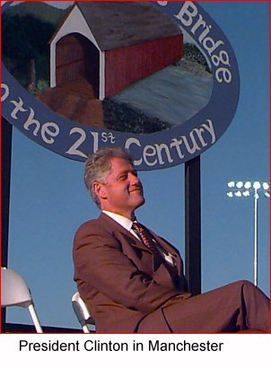

 On the Horizon
As we head into the final days
of the campaign, we need your help
energizing your community to
GET OUT THE VOTE!Call the Clinton/Gore office number
below to volunteer.New Hampshire Highlights
November 4 - The President in Manchester
October 7 - The President in Manchester
Clinton-Gore '96 Headquarters
340 Granite St
Third Floor
Manchester, NH 03104Phone: 603-626-6696
Fax: 603-645-1193
State Director: Chris Phillips
New Hampshire Democratic
Coordinated Campaign
150 North Main Street
Concord, NH 03301Phone: 603-225-6899
Fax: 603-225-6797
Paid for by Clinton/Gore ’96 General Election Committee, Inc.